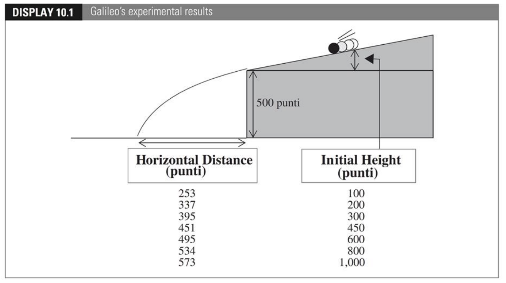

30:00
Day 14
Carleton College
Stat 230 - Spring 2026
Situation where 2+ predictors are “nearly” perfectly correlated
Work through Examples 1-3 on worksheet
Work with your group to complete the tasks
Let me know when finish Task 6
Be prepared to share thoughts with the class
30:00
Examine scatterplot matrix
Examine pairwise correlations between predictors
Look for \(\widehat{\beta}_i\)s with unusual signs
Notice sensitivity to changes in the model/order of predictors
Calculate the Variance Inflation Factor (VIF)
\({\rm VIF} = \dfrac{1}{1 - R^2_i}\)
\(R^2_i=R^2\) from model predicting \(x_i\) using all other predictor variables
Guidelines:
| Variable | VIF |
|---|---|
| x1 | 1 |
| x2 | 1 |
The vif() command is in the car R package
Error in vif.default(ex2_mod): there are aliased coefficients in the modelcar::vif() throws an error! Why?
\(\text{VIF} = \dfrac{1}{1 - R^2_i}\)
Since \(x_1\) and \(x_2\) are perfectly correlated, \(R^2_i = 1\)
This makes the denominator \(1 - R^2_i = 0\)
So, \(\text{VIF} = \dfrac{1}{0}\) is undefined
| Variable | VIF |
|---|---|
| triceps_skinfold | 708.8429 |
| thigh_circumference | 564.3434 |
| midarm_circumference | 104.6060 |
The . on the right side of the model formula tells R to use all other variables in the data frame as predictors
Use the model only for prediction, if you think future observations will have the same relationships amongst variables
For polynomials, use poly(x, degree) in R, or center the variable
Drop some of highly correlated variables — USE CAUTION, doesn’t always work and loses information
Add cases that break the correlation between predictors – reasonable in designed experiments
Create composite variables (e.g., sums, averages, principal components) – can be harder to interpret
Use ridge regression or LASSO – need Stat 270 (Statistical Learning)
Different polynomial models were used to predict the horizontal distance based on the starting point in Galileo’s experimental data

Different polynomial models were used to predict the horizontal distance based on the starting point in Galileo’s experimental data
| Order | R2 |
|---|---|
| 1 | 0.9264 |
| 2 | 0.9903 |
| 3 | 0.9994 |
| 4 | 0.9998 |
| 5 | 0.99996 |
| 6 | 1.0000 |
Imposes a penalty for model complexity, so it increases only if the improvement outweighs the cost of making the model more complex
\[ R^2_{\text{adj}} = 1 - \frac{MSE}{MST} = 1 - \frac{SSE/(n-p-1)}{SST/(n-1)} \]
\[ R^2_{\text{adj}} = 1 - \left( \frac{n-1}{n-p-1} \right) \cdot \left(1 - R^2 \right) \]
Note: p is the number of predictors
| Order | R2 | R2adj |
|---|---|---|
| 1 | 0.9264 | 0.9116 |
| 2 | 0.9903 | 0.9855 |
| 3 | 0.9994 | 0.9988 |
| 4 | 0.9998 | 0.9995 |
| 5 | 0.99996 | 0.9998 |
| 6 | 1.0000 | undefined |
Recall that there are only n = 7 observations in this data set